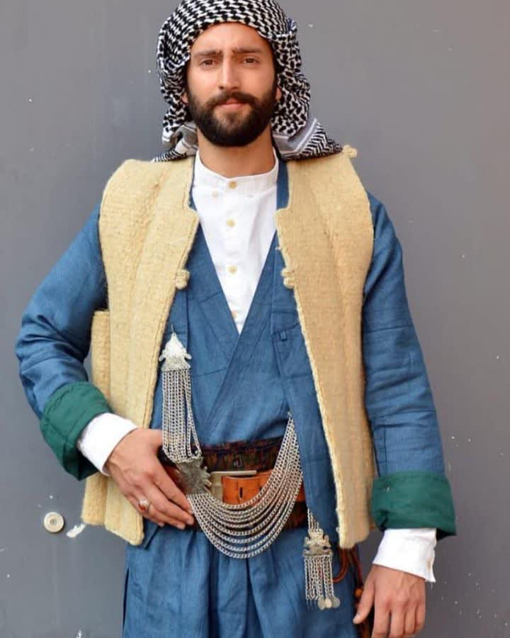
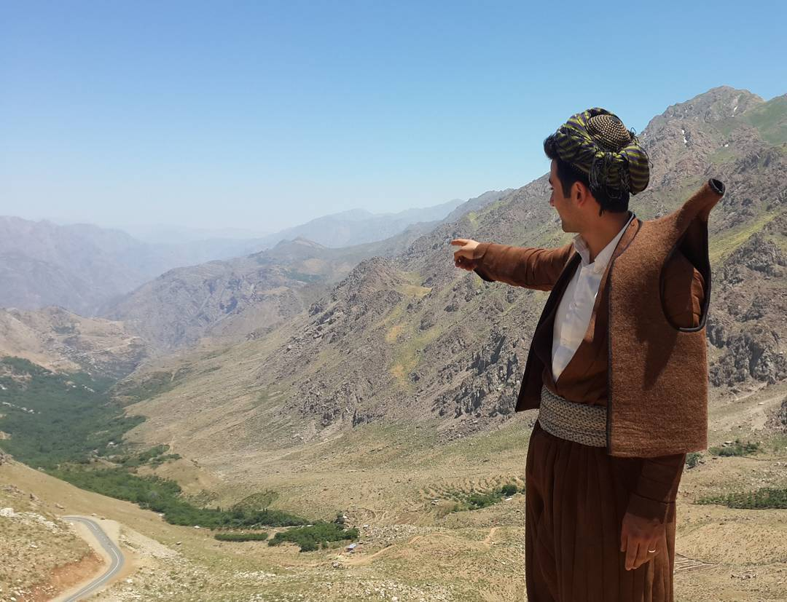
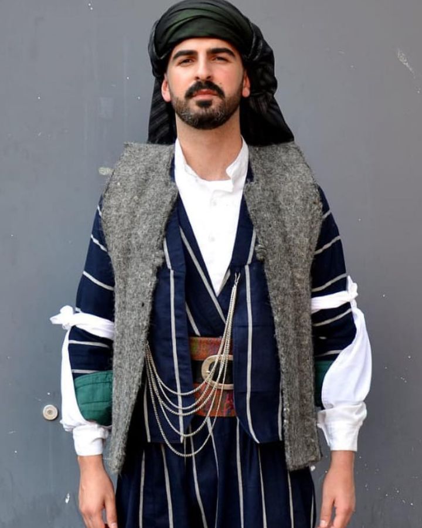
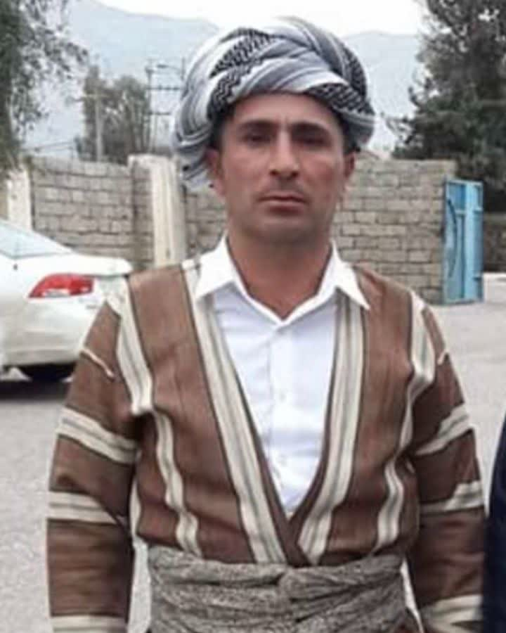
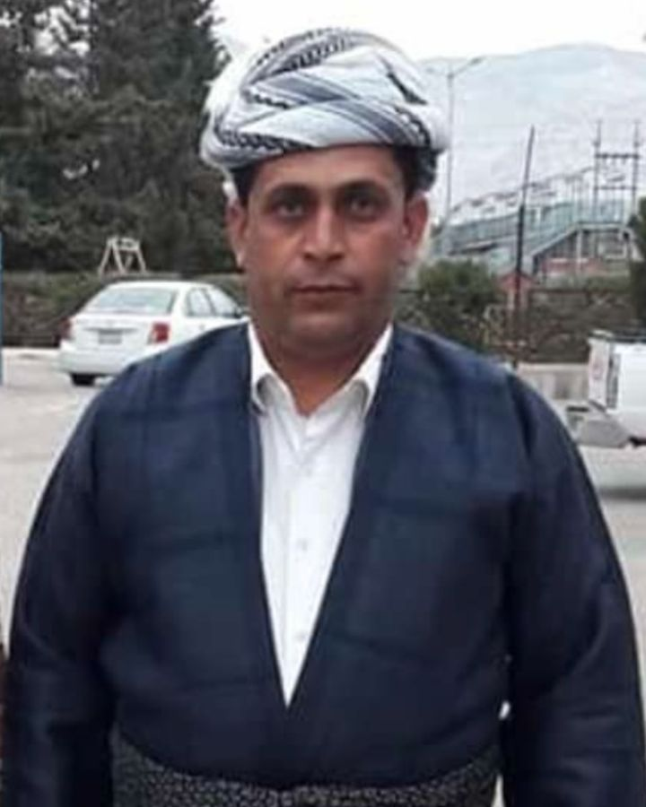
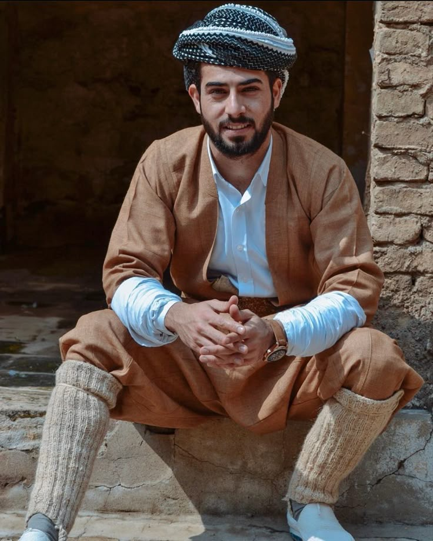
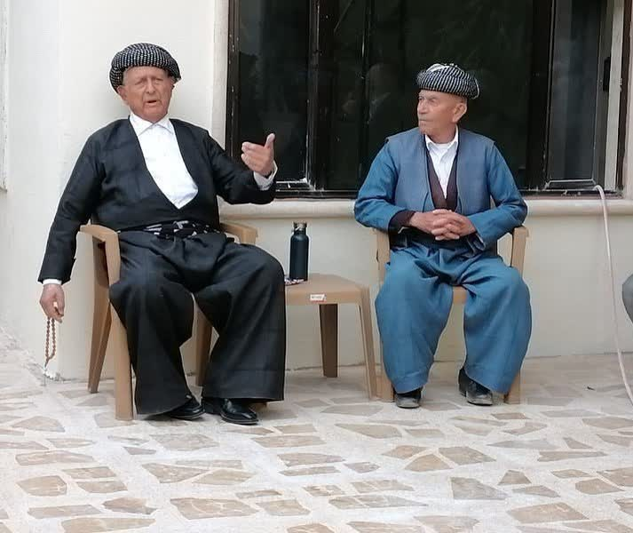
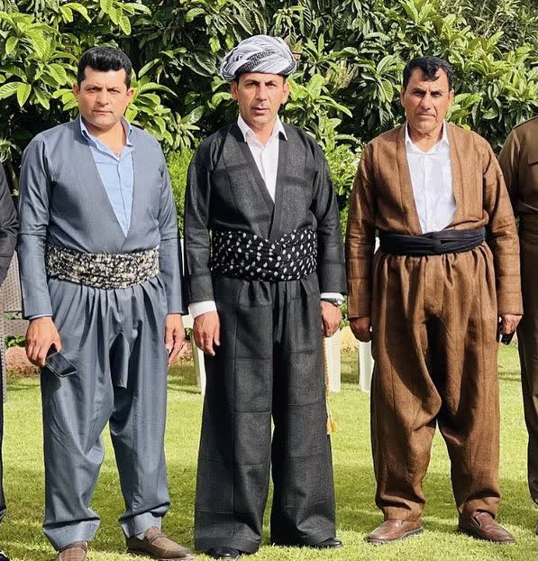
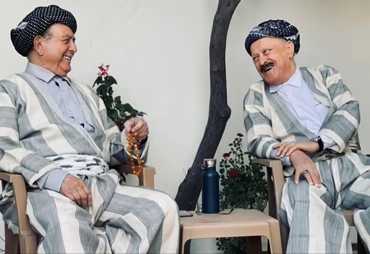

Ön Sipariş

Şal û şepik; şepik adı verilen ceket ile şal adı verilen geniş kesim pantolondan oluşan, bele şûtik kuşak sarılarak tamamlanan geleneksel Kürt erkek takımıdır. Tiftik ve yün dokuma kumaşlarıyla hem şık hem dayanıklıdır.









Koleksiyonumuzu beğendiyseniz tek tıkla talep bırakın; yeterli talep oluştuğunda satışa başlıyoruz.